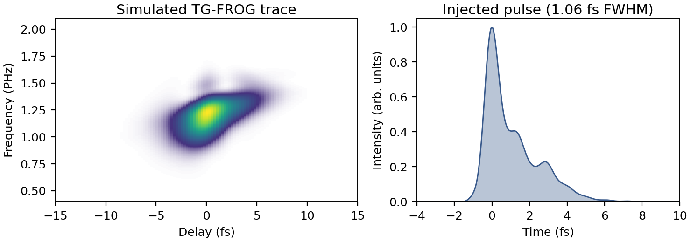

Input Pulses
By default build_setup constructs its own input field: a transform-limited Gaussian at λ0 with intensity FWHM τfwhm, optionally chirped by the GDD and TOD keywords. That is the right pulse for a controlled numerical experiment, where the point is to retrieve a shape you specified exactly.
It is the wrong pulse when the question is whether a retrieval works on the light a particular laser actually produces. A measured or separately simulated spectrum — structured, with deep minima, satellites and a spectral phase no polynomial reproduces — stresses a retrieval in ways an analytic Gaussian never does. The input_pulse keyword injects one.
This page covers the whole path: getting the data in, conditioning it, injecting it, and the two conventions that make the difference between a faithful injection and a silently aliased one.
The data container
InputPulseData holds a complex spectrum Eω on an absolute, ascending, approximately uniform angular-frequency axis ω in rad/s. Absolute means the physical frequency, not an offset from a carrier: the same convention Luna's grid.ω uses, so no carrier bookkeeping is needed anywhere downstream.
Amplitude units are irrelevant. The beamlet builder rescales the assembled beam to the energy you request, so a spectrum in arbitrary detector counts injects exactly as well as one in V/m.
The constructor validates what it can: matching lengths, at least eight samples, and an ascending axis. Everything else is checked at the point it matters.
using ModelPNPS
ω = collect(range(2π * 3e14, 2π * 2.1e15, 4096)) # rad/s, ascending
Eω = my_complex_spectrum(ω) # any complex amplitude scale
pulse = InputPulseData(ω, Eω)Loading from HDF5
load_input_pulse reads the two datasets from an HDF5 file. The spectrum must be a native complex dataset — as written by HDF5.jl, or by h5py with a compound ('r', 'i') dtype.
pulse = load_input_pulse("DUV_opt.h5"; ω_key = "ω", Eω_key = "filteredEω")The key names default to "ω" and "Eω"; pass them explicitly when the file uses its own names, as above. A file whose entries are groups rather than datasets throws an ArgumentError naming the offending key, rather than failing later with a type error deep inside the interpolation.
Conditioning: window, then centre
Two in-place steps normally sit between loading and injection, and the order matters.
1. Window out what the experiment would not deliver
spectral_window! applies a smooth tanh band-pass in place: unity well inside (λmin, λmax), rolling off with edge widths set as a fraction of the edge angular frequency.
spectral_window!(pulse, 148e-9, 830e-9; wfrac_blue = 0.05, wfrac_red = 0.03)This step is physical, not cosmetic. A DUV pulse produced by resonant dispersive-wave emission in a hollow fibre arrives alongside a driver remnant that can carry most of the energy — per-ω comparable to the UV peak even when a per-λ plot makes it look negligible, and delayed by hundreds of femtoseconds. Injected raw, it would dominate the χ⁽³⁾ interaction and you would be simulating a different experiment. The window models the separation a real UV beamline provides.
Whatever survives the window is the pulse the retrieval must be compared against, not the raw file. Keep the window parameters with the run's provenance — extra_grid_metadata is the place for them, and they then travel inside the output file:
extra_grid_metadata = Dict{String, Any}(
"source_file" => basename(path),
"window_nm" => [148.0, 830.0],
"window_wfrac" => [0.05, 0.03],
)2. Centre the pulse on its own time origin
center_pulse! removes the linear component of the spectral phase, so the temporal envelope peaks at the data FFT's natural origin. It returns the pulse and the shift applied, in seconds (positive means the pulse arrived late and was advanced).
pulse, tshift = center_pulse!(pulse)A pure linear spectral phase is physically irrelevant — it is a choice of time origin. Numerically it matters twice:
- It sets how much
trangethe simulation must hold. The window has to cover the pulse and the delay scan; a pulse sitting 500 fs off-origin wastes that span. - More importantly, it decides whether the spectrum can be interpolated at all. A pulse far from its grid's time origin has a spectral phase rotating by up to π per sample, and no real/imaginary interpolation can resample that.
interp_input_pulsemeasures the median per-sample phase rotation and warns when it exceeds 1 rad, namingcenter_pulse!as the fix.
center_pulse! requires an approximately uniform ω grid and throws an ArgumentError otherwise. The returned shift is reported modulo the data grid's time period, since the on-grid phase is identical for any branch.
Injection
Pass the conditioned pulse to build_setup:
beam = HE11Beam(125e-6, 5.0, 0.1)
window = PhysicalMaskWindow(; holex = -0.75e-3, holey = -0.75e-3,
holediam = 1.0e-3, zmask = 0.1, apod = :tanh)
setup = build_setup(;
λ0 = 260e-9, τfwhm = 1e-15, energy = 0.1e-6,
thickness = 40e-6, material = :SiO2,
mask_diam = 1.0e-3, mask_spacing = 1.0e-3,
λlims = (140e-9, 950e-9), trange = 160e-15,
beam, window,
input_pulse = pulse,
)What the other keywords mean once input_pulse is set:
| Keyword | Role with a data pulse |
|---|---|
λ0 | nominal only — mask apodisation defaults, diagnostics, metadata |
τfwhm | nominal only — no longer describes the injected pulse |
energy | still authoritative; the beam is rescaled to it |
GDD, TOD | compose on top of the data phase; leave at zero unless deliberate |
λlims | must bracket the data, including its tails — see below |
HE₁₁ only, and why
input_pulse is supported for HE11Beam and throws an ArgumentError for any other beam model. This is a real restriction, not an oversight. In the HE₁₁ path the 1-D reference spectrum is the pulse: the chromatic mask vignetting is applied to it downstream, so an arbitrary field composes through the geometry exactly. The GaussianBeam builder instead constructs its own spatio-temporal Gaussian from (λ0, τfwhm) and would silently ignore the data.
Interpolation onto the simulation grid
interp_input_pulse resamples the data onto grid.ω with separate cubic B-splines for the real and imaginary parts, zero outside the data's range. Two diagnostics guard the two ways this goes wrong:
- Too coarse. If the data's
dωis larger than the grid's, the interpolation is inventing spectral detail between samples, and a warning says so. The fix is denser data, not a coarser grid. - Off-origin. The per-sample phase-rotation warning described above.
Finally the field is shifted to the middle sample of Luna's centred time grid, matching Luna's own Fields.DataField convention, so the propagated beamlets and the stored temporal diagnostics agree.
Choosing λlims and trange
The grid must hold the pulse's tails, not just its core. A red tail clipped at the window edge reappears at the z-saves as wrap-around. Size the window from where the spectrum actually falls below the level you care about (say 10⁻³ of peak), not from the nominal bandwidth, and give trange room for the centred pulse plus the full delay scan.
Worked sequence
The whole path, with the QA step that catches a bad injection before hours of propagation:
using ModelPNPS
import FFTW
import Printf: @printf
pulse = load_input_pulse("DUV_opt.h5"; Eω_key = "filteredEω")
spectral_window!(pulse, 148e-9, 830e-9; wfrac_blue = 0.05, wfrac_red = 0.03)
pulse, tshift = center_pulse!(pulse)
# QA on the data's own grid: duration, and how much energy sits inside the
# temporal window the simulation will hold.
let n = nextpow(2, 4 * length(pulse.ω))
buf = zeros(ComplexF64, n)
buf[eachindex(pulse.ω)] .= pulse.Eω
it = abs2.(FFTW.ifft(buf))
dt = 2π / (n * (pulse.ω[2] - pulse.ω[1]))
t = (0:(n - 1)) .* dt
t = ifelse.(t .> n * dt / 2, t .- n * dt, t)
fwhm = count(>=(0.5maximum(it)), it) * dt
core = sum(it[abs.(t) .< 30e-15]) / sum(it)
@printf("centred by %+.2f fs, FWHM %.3f fs, %.4f of energy within ±30 fs\n",
tshift * 1e15, fwhm * 1e15, core)
endIf that last fraction is not very close to 1, trange is about to be too small, or the window has left something in the file that does not belong in the simulation.
Example: a single-cycle RDW pulse
The final validation of the reference paper (see The paper) runs exactly the sequence above. The resonant-dispersive-wave emission of a gas-filled hollow-capillary fibre source — a 1.06 fs pulse with a structured spectrum and a train of trailing satellites — is simulated at the generation stage, conditioned with spectral_window! (148–830 nm) and center_pulse!, and injected into the virtual TG-FROG instrument with input_pulse, exactly as a real measurement would receive it. The trace below was recorded at a 9.5 µm fused silica substrate through a 2.0 mm collection hole; because the injected field is known exactly, retrievals of this trace can be scored against the truth.

Left: the simulated TG-FROG trace of the RDW pulse at a 9.5 µm fused silica substrate. Right: the temporal intensity of the injected pulse — a 1.06 fs main peak with trailing satellites from the soliton dynamics of the source.
API
Full docstrings for InputPulseData, load_input_pulse, spectral_window!, center_pulse! and interp_input_pulse are on the API Reference page.